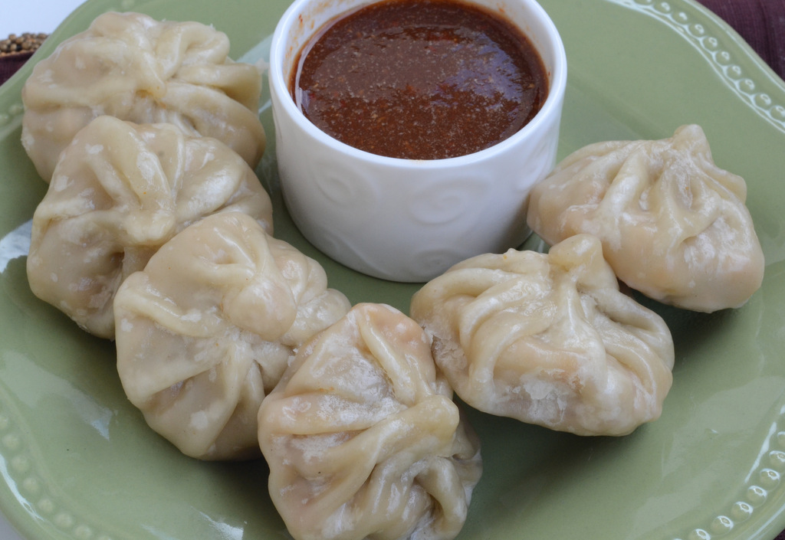

HOME
Momos

Ingredients
- For Dough:
-
- 1½ Cup maida/Plain flour
- 1/2 Tsp Salt
- Water for Kneading
- Oil for Greasing
- For Stuffing:
-
- 3 tsp oil
- 3 clove garlic (finely chopped)
- 1 inch ginger (finely chopped)
- 2 chilli (finely chopped)
- 4 tbsp spring onion
- 1 cup carrot (grated)
- 2 cup cabbage (shredded)
- 1/2 tsp pepper (crushed)
- 1/2 tsp salt
INSTRUCTIONS
- fFirstly, prepare stuffing by heating 3 tsp oil and saute 3 clove garlic, 1 inch ginger and 2 chilli.
- Also, add 2 tbsp spring onion and saute on high flame.
- further, add 1 cup carrot and 2 cup cabbage. stir fry on high flame.
- Now add ½ tsp pepper and ½ tsp salt.
- Additionally, 2 tbsp spring onion and stuffing mixture is ready.
- Further, pinch a small ball sized momos dough and flatten.
- Now dust with some maida and start to roll using a rolling pin.
- Roll to almost medium thin circle. around 4-5 inch in diameter. make sure you roll from sides and keep the centre slightly thick.
- Now place a heaped tbsp of prepared stuffing in the centre.
- Start pleating the edges slowly and gather everything.
- Press in middle and seal the momos forming a bundle.
- Heat a steamer and arrange the momos in the tray without touching each other.
- Furthermore, steam momos for 10-12 minutes or till shiny sheen appears over it.
- Finally, veg momos recipe is ready to enjoy with momos chutney.